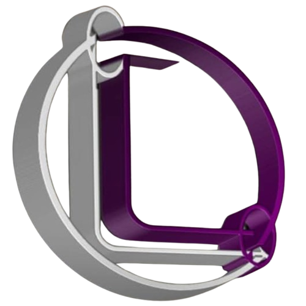

A service of LD WORLD GLOBAL
In Silico Biology · AI · ML · Bioinformatics · Genomics · Protein Science
The Osaghale CompBio Lab uses AI, machine learning, and bioinformatics to combat antimicrobial resistance, understand pathogen evolution, and translate genomic discoveries into actionable health insights.
Explore Our Research → View Publications ⚡ Try AST ToolThe Osaghale CompBio Lab focuses on integrating artificial intelligence, machine learning, and computational genomics to address critical challenges in infectious diseases and antimicrobial resistance (AMR). Our core approach involves developing hybrid deep learning architectures—including CNN–BiLSTM–Attention models—that enable rapid, broad-spectrum AMR prediction directly from whole-genome assemblies. Additionally, we design adaptive, time-sensitive machine learning frameworks that combine RNNs, Bayesian change-point detection, and reinforcement learning to optimise personalised therapeutic regimens. Our structural bioinformatics pipeline leverages AlphaFold for protein structure prediction and AutoDock Vina for molecular docking, accelerating the identification of novel drug targets and inhibitors. Across all investigations, we adhere to open-science principles and build reproducible, robust workflows for GWAS, WGCNA, k-mer feature engineering, and network analysis. We also apply a One Health perspective to our research, extending our computational methods to foodborne pathogen surveillance, environmental metagenomics, and public health genomics.
Our lab develops and deploys open-source computational tools to accelerate antimicrobial resistance research and clinical diagnostics.
Machine learning tool for rapid antimicrobial susceptibility prediction from whole-genome assemblies. Built with Python, TensorFlow, and Streamlit.
Launch Tool →We are actively developing additional computational tools for genomics, phylogenetics, and drug discovery. Stay tuned!
In DevelopmentPrincipal Investigator
Microbiologist · Bioinformatician · AI Researcher
MSc Environmental Microbiology (First Class) · University of Ibadan
Founder, LD WORLD GLOBAL
Interested in joining our lab? Interested in collaboration?
We are always open to connecting with passionate researchers, students, and collaborators.
Principal Investigator:
Linda Osaghale
Email:
linda@researchacademy.uk
Phone:
+234 816 674 5687
ORCID:
0009-0000-3414-2814
GitHub:
github.com/Oselin1988
Affiliated with:
LD WORLD GLOBAL
researchacademy.uk
Workflows:
github.com/oselin1988/ALL-WORKFLOWS
AST Tool:
rapid-ast-predictor.streamlit.app